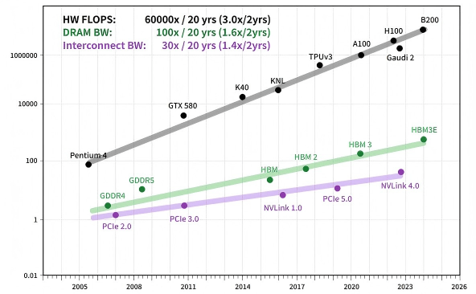
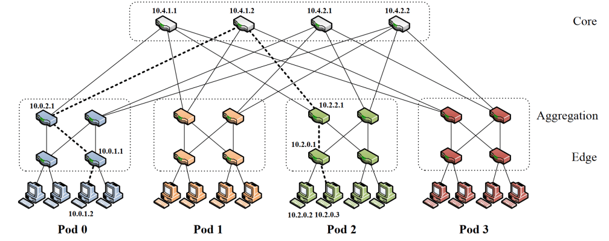
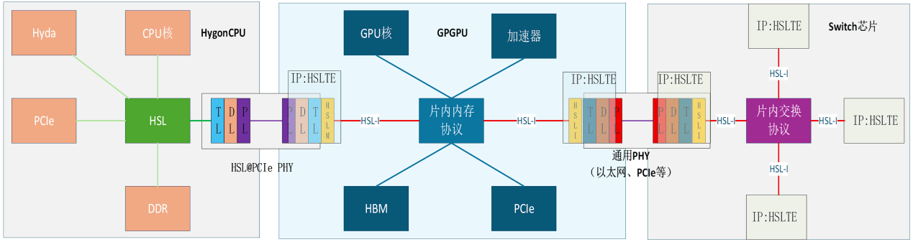
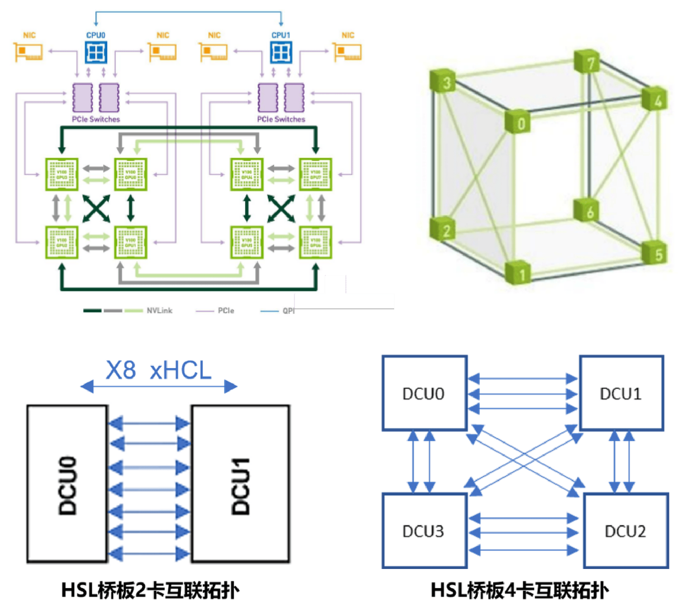
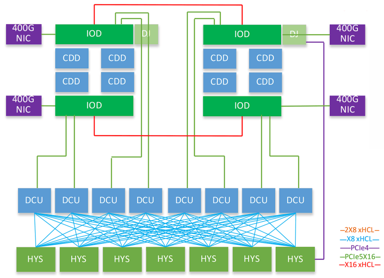
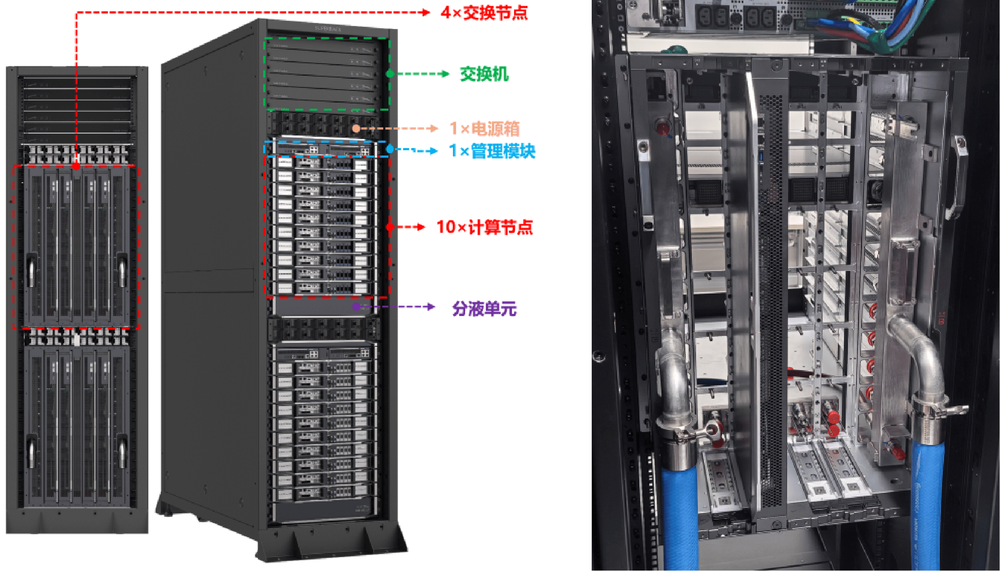
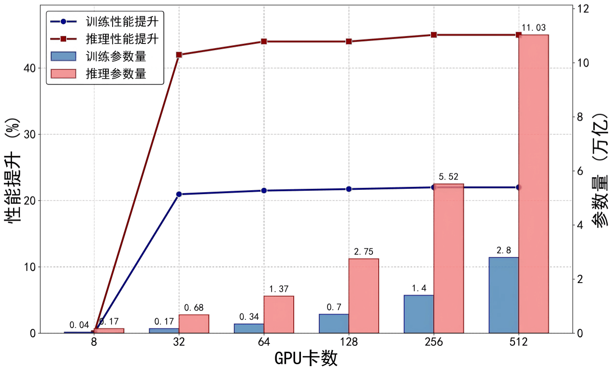

标准构型（全对等互联 + 总线型协议）¶
总线型 Scale-Up 方案的共同目标，是在机柜级高带宽域内提供接近片内互联的内存语义能力：加速器之间可以直接执行 Load/Store/Atomic，而不必把所有通信都退化为消息传递。但如果把它仅仅理解为一种低时延协议，就会低估这条路线真正锚定的约束。更准确地说，标准总线构型优先保留的是：把更多强语义访问稳定留在受控域内，让远端资源在软件上尽可能继续表现为本地资源。
因此，这条路线的核心取舍并不是单纯追求更高带宽，而是优先守住原生内存语义和最低访存时延，再在这一约束下争取开放生态与可扩展性。只要这个目标成立，TP 主导的细粒度同步、长上下文推理中的 KV Cache 共享、跨卡原子访问和显存池化都会显著受益；而一旦这一目标不能成立，系统就必须把更多代价转移给消息路径、DMA 搬运和软件运行时。
架构定义、组网描述与技术演进 ¶
目标问题 ¶
随着 AI 模型参数从千亿迈向万亿，序列长度从 4K 扩展至 1M，模型训练的计算量与通信量呈指数级增长。尽管单卡算力持续提升，但集群的有效算力严重受限于卡间互联带宽与通信效率。如图，网络带宽的进步速度慢于算力和显存，通信墙是制约 GPU 集群算力高效输出的关键瓶颈，通信协议和网络拓扑的优化对于最小化通信开销和大规模弹性扩展至关重要。

图 互联带宽的进步速度显著慢于算力和显存 （来源：Deepseek论文，Fire-Flyer AI-HPC）
传统的基于以太网（RoCE）或 InfiniBand 的 Scale-Out 方案在超大规模下仍面临拥塞、多跳延迟、长尾效应及高昂成本等问题。而基于 PCIe 总线的直连方案虽延迟极低，但受限于拓扑灵活性与扩展规模（通常 ≤8 卡
为应对大模型训练与推理场景下日益严苛的通信带宽、时延及能效挑战，本章节介绍以全对等互联和总线型 Scale-Up 协议为核心的标准总线构型超节点，实现极致高带宽、超低时延、高能效比且易于扩展的 AI 算力底座，精准匹配智算超节点乃至更大规模 GPU 集群的高性能互连需求。
方案架构与算力演进 ¶
标准总线构型不应被理解为某一家厂商的产品说明，而应理解为一类协议家族。公开标准侧，以 UALink 为代表；厂商或联盟侧，也出现了 HSL、UB、ALS-D 等总线语义互联实践。它们在开放程度、规模能力与工程成熟度上各不相同，但共享同一设计哲学：用总线的方式做互联，而不是用网络的方式模拟总线。
这类路线通常具备以下共性：
- 原生内存语义：支持
Load/Store/Atomic，而非只支持消息收发。 - 固定或强约束
Flit传输：减少变长帧解析与缓存不确定性。 - 统一寻址或扁平地址空间：使远端显存访问尽可能接近本地编址。
- 专用交换或专用总线域：以交换芯片或近端互联构建低跳数高带宽域。
- 更强的时延确定性：面向小包、高频同步和跨卡显存共享。
在这些路线中，UALink 1.0 是当前最适合作为公开代表进行分析的一条路线：规范公开、产业参与者广、技术边界清晰。其核心技术特征包括：
FAM（Flat Address Memory）架构：将加速器显存映射到全局扁平地址空间。- 固定
640B DL Flit + 64B TL Flit：降低帧处理复杂度，提升载荷效率。 - 单通道
200 GT/s，四通道800 Gbps全双工：物理层复用以太网SerDes，链路与事务层自定义。 64B负载RTT < 1 us：目标是把端到端远端访存控制在亚微秒量级。- 链路利用率约
93%：通过固定Flit、LLR + CBFC等机制逼近专有总线效率。 - 单
Pod规模<=1024加速器：定义了单级交换域的目标边界。
从算力演进角度看，总线型构型的扩展并不只取决于单链路速率，还取决于交换芯片是否能够同步把地址语义、流控和仲裁能力做大。也正因为如此，这条路线的增长变量从来不是单一带宽，而是“协议 + 交换芯片 + 地址空间 + 控制面”能否共同向上扩展。
组网描述 ¶
标准总线构型通常采用“加速器端口 + 专用交换域”的两级结构：
- 计算节点层：
GPU/XPU通过片上或近端PHY接入总线域，暴露内存语义访问接口。 - 交换层：专用交换芯片承担
Flit转发、地址路由、仲裁与流控，必要时支持多播或规约加速。
以 UALink 1.0 为参照，机柜级部署的典型参数可概括如下：
| 参数 | 典型值 |
|---|---|
单 Pod 加速器规模 |
64–1024 XPU |
| 单链路带宽 | 800 Gbps 全双工（四通道） |
| 交换层级 | 1 级（单级总线交换域） |
| 内存语义 | 原生 Load/Store/Atomic |
64B 负载 RTT |
< 1 us |
| 链路利用率 | 约 93% |
| 地址空间 | 全局扁平或统一编址 |
在更广义的总线型路线中，节点内也可能先采用直连拓扑，再向“节点内交换 + Pod级交换”演进；而当规模从单 Pod 继续扩大时，通常需要回到“Pod 内总线 + Pod间网络”的两级结构。这意味着总线型方案并不是无限外推的通用解，更适合作为超节点内部的高带宽域，而不是整个万卡系统唯一的互联层。
核心组件与关键技术：硬件、软件与算法协同 ¶
硬件组件 ¶
总线型构型能否落地，最关键的不是协议文本，而是交换芯片是否就绪。对于这类方案，交换芯片不仅要转发数据，还要理解地址、流控、仲裁以及必要的规约语义，其角色更接近 NVSwitch，而不是传统以太交换机。这也是 UALink 当前最大的现实约束。虽然 UALink 1.0 规范已经发布，但截至目前，产业界 UALink 交换芯片仍缺少公开量产的产品，部分产品依然在测（比如国内楠菲微的 UALink 接口 IP 和交换芯片UALink 在协议层已经成型，但在最关键的交换芯片层仍存在明显缺口。这一缺口直接决定了它目前更像一条高潜力标准路线，而不是已被广泛部署的成熟工程选项。
除了交换芯片之外，加速器侧也需要在片上或封装侧集成对应物理层与事务引擎。与完全自研私有 PHY 相比，复用以太网或 PCIe 系列 SerDes 的路线更容易控制硅片成本，也更便于纳入现有高速接口生态。这也是 UALink 以及部分国内总线型协议都强调“复用成熟 PHY、重定义上层协议”的原因。
在 Pod 内部，互联距离通常控制在几米以内，以铜缆 DAC、背板或短距高速连接器为主；在整机设计上，则更强调低跳数、短路径和高密度布线。这类系统经常天然适配高密度刀片、背板直连或液冷机柜，但工程优势只有在专用交换芯片和配套管理软件同时成熟时才能真正兑现。
软件与协议栈 ¶
总线型方案的软件栈与以太型方案存在根本差异，其编程模型更接近共享内存，而不是消息传递。也正因为如此，它对组织能力的要求并不止于做出交换芯片，而是要同时承接地址空间、一致性、通信库与故障域控制：
- 统一地址映射：运行时需要管理全局地址空间，使上层框架能够透明访问远端显存。
- 一致性策略：在硬件一致性、目录一致性与软件管理一致性之间寻找平衡。
- 集合通信库：
AllReduce、All-to-All等操作需要针对Flit与内存语义做深度适配。 RAS与故障隔离：总线域内单个端点或链路故障可能影响更大范围的一致性与可达性。
总线型 Scale-Up 与 CXL 在内存语义层面存在交集，但定位并不相同：CXL 更强调CPU - 设备、内存扩展与池化场景；总线型 Scale-Up 协议更强调加速器间低时延、高带宽、细粒度访问。在实际超节点中，两者更可能是互补关系：总线型互联用于 Pod 内高性能加速器互联，CXL 用于 CPU-GPU 协同和内存池化。
典型行业公司实践： HSL 等总线语义协议族 ¶
从生态角度看，总线型路线大致可分为三类：
- 公开标准路线：以
UALink为代表，优势是开放性和跨厂商协同潜力，短板是交换芯片与系统化量产仍未成熟。 - 厂商私有或半开放路线：具备更强的端到端系统一致性，但生态复用和跨厂商兼容性较弱。
- 兼容或衍生实现路线：尝试在开放标准与本地化工程之间建立桥梁，但成熟度和一致性仍有差异。
与以太型方案不同，对国内产业而言，总线型高性能路径的关键瓶颈并不在 NIC、光模块或运维软件，而在专用交换芯片及其配套软件栈。
海光 DCU 超节点：基于 CLOS 拓扑和 HSL 协议 ¶
海光基于自研专用交换芯片及其配套软件栈搭建起基于 HSL 协议的超节点体系：
i. 节点内加速卡 DCU + 自研交换芯片 HySW + 总线型 HSL 协议高速互联，节点间配合自研 IB 网卡/ IB 交换机的高速网络，组成低延迟、高吞吐的集群通信底座。
ii. 自研加速卡与整机协同设计，从架构规划到系统调优全链路打通，结合先进液冷技术，确保算力资源高效释放。
iii. 自研软件平台、驱动程序与编译工具链深入适配加速卡架构，发挥芯片最高性能，高度兼容主流框架与模型，提供全面的 CUDA 替代方案。
组件定义 ¶
DCU（Deep Computing Unit）：海光设计的深算系列 GPGPU 架构加速卡核心计算单元。产品形态包括插卡、扣卡、OAM模组、AI 服务器、超节点、超集群等。DCU内置HSL协议引擎，该引擎直接与 GPU 的片上网络（NoC）或显存控制器对接，能够高效地发起和接收HSL数据包，极大减少了主机 CPU 的干预和数据拷贝开销。HSL（High-performance Scalable Link/Hygon System Link）：海光高性能可扩展互连总线协议，也可简称为HSL。自研HSL协议专为 AI 集合通信优化，精简了传统协议的复杂状态机和校验机制，专注于在 GPU 加速卡之间或者 GPU 与交换芯片之间提供高吞吐、低时延、确定性的点对点数据传输能力。HSL物理链路基于PCIe PHY，每条HSL链路（1 link）速率可达32 GB/s。采用先进的信号完整性设计和低损耗材料，确保在超节点内部和机柜间的稳定高速传输。HYS（Hylink Switch）：原生支持HSL协议的专用交换芯片。 HYS（或称HySW）内部的数据通路针对HSL数据包格式进行了硬件优化，转发时延极低（纳秒级别） 。按端口数量的多少，分为LRS（Low-radix Switch，低端口数交换机） ， HRS（High-radix Switch，高端口数交换机） 。PCIe PHY（Peripheral Component Interconnect Express，Physical Layer）: 高速串行计算机扩展总线的物理层。 cCLOS拓扑是一种多级交换架构，通过多路径连接实现高带宽和低延迟，具备构建非阻塞或轻微阻塞网络拓扑的能力，在超节点/超集群中被广泛用于支撑 AI 训练推理等高吞吐、低延迟的通信需求。胖树（Fat-Tree）拓扑是CLOS的一种具体实现形式，其特点是靠近根部的链路带宽更更高，支持高可扩展性和多路径并行传输，能有效避免传统树形结构中的带宽瓶颈。

图 三层 Fat-Tree 拓扑示意图（交换机端口数均为 k = 4）
- 正交架构：计算节点与交换节点横纵正交，通过连接器和中板定位精密对插，减少线缆使用，易于管理维护。与一层
CLOS拓扑完美适配。
协议栈 ¶
HSL 是一类一致性总线协议，协议栈支持高带宽、低时延、可扩展性强的内存语义接口，可缓存一致性加速器，基于 MMU+TLB 进行地址转换，片上或 HCL 互联，可通过指令 + 硬件队列进行任务下发等。
海光通过 HSL 协议实现海光系列产品的统一高性能互联。HSL 协议包括完整的协议层、传输层，并兼容业界通用的物理层，并通过 HSL-I 进行扩展和开放。
TL：传输层（CAKE）
DL：数据链路层（PCS）
PL：物理层（PHY）
| 层级 | 模块与功能 |
|---|---|
| 事务层 | 内存访问：• Load/Store/Atomic（内存语义） • Scale 模式（消息语义）功能特性：• 虚拟通道 • 子通道 • 直接中断 • 流量控制 • PCIe 兼容 系统管理：• 系统配置 • 系统消息 • 错误处理 |
| 传输层 | • Burst 传输 • 响应聚合 • 数据压缩与解压缩 • 灵活打包方案 |
| 数据链路层 | • 链路层重传 • 基于信用的流量控制 • 自动建链 • CRC |
| 物理层 | • PCIe SerDes（32GT/s + 64GT/s） |

图 HSLink 的同步语义支持
HSL-I 协议功能 ( IP:HSL传输引擎 )
（1）基础功能
• 实现基于 PCIe PHY 与海光 CPU 直连。
• 基于 PA 的一致性统一 CPU 内存访问（Load/Store、Atomic、Barrier）。
• 标准 To Core 中断处理。
• 标准 HSL-I 对外接口。
（2）扩展功能
• CPU 加速器专用指令：提供编程灵活性，降低延迟。
• 虚实地址翻译：实现高效统一内存池。
• 缓存方案：实现低延迟高带宽访存。
• 硬件任务队列方案：实现硬件加速器锁机制。
• 访存 QOS 方案：提供实时性，确定性。
• 单 HSLTE 多 HSL-I 接口扩展。
系统管理 ¶
链路拓扑与组件状态管理 ¶
HFM（Hyswitch Fabric Manager）：单个 Tray 的子网管理 Agent，负责节点内部和节点间的链路建立、拓扑发现、异常处理与固件升级，是各计算 / 交换节点的本地管理与建链执行模块。SFM（Subnet Fabric Manager）：超节点 Scale-Up 域子网管理服务。负责汇聚全系统的所有拓扑与节点信息，统一规划地址与路由、分发全局配置并协调整个超节点系统的初始化与运行监控。
错误和故障处理 ¶
超节点组件数量大，系统复杂，针对 DCU 卡、HLS 链路、HYS 交换芯片、节点等故障，设计合理的 RAS 机制，针对性地隔离 DCU 或 HYS，处置完成后按需重新建链，保障任务长稳运行和算力高效输出。
平台接口 ¶
预留与各类资源管理平台和监控运维工具的 API 接口。
架构优势 ¶
规模扩展 ¶
总线型构型在 Pod 内部具备很强的高带宽组织能力，能够把更多远端资源继续组织成近似本地资源。这使它在几十卡到数百卡的强同步域内表现突出。但这条路线的规模外推并不是无限的，一旦超出单级交换域，系统通常仍需要回到“Pod 内总线 + Pod间网络”的两级结构。
以海光实践为例介绍从卡间直连到超节点 CLOS 拓扑的各个扩展阶段：
- 单计算节点内卡间直连：通过桥接板实现 2 张或 4 张
DCU PCIe插卡的直连拓扑（4 卡桥接类似NVLink 2.0的混合立方体 8 卡拓扑） ，不依赖HYS、HCA网卡，通信路径最短。

图 Nvidia V100 8 卡 直连拓扑（上）与海光 DCU 2 卡 /4 卡 直连拓扑（下）
- 单计算节点内
DCU卡通过HYS做全对等互联：HYS交换芯片对HSL协议原生支持，能够无缝地实现 8 卡互联连接成一层CLOS拓扑。使用LRS（Low-radix Switch，低端口数交换机） ，交换机端口数不低于卡数（8 卡） ，即可满足拓扑要求。由于HSL协议的轻量级和HYS交换机的专用性，引入的时延和开销远低于传统以太方案。

图 DCU OAM 模组 8 卡 互联
- 超节点的多个计算节点的
DCU卡通过HYS做全对等互联：DCU超节点，总卡数 32 以上，同样使用CLOS架构，依赖HRS（High-radix Switch，高端口数交换机） ，交换机端口数不低于超节点卡数，可以满足拓扑要求。

图 标准机柜容纳 2 台液冷超节点，计算节点与交换节点正交设计
| 超节点技术规格 | |
| 10× 计算节点 | |
| 核心芯片 | 1×CPU + 4×GPU |
| 内存规格 | 12×DDR5 6400MT/s DIMMs |
| 存储规格 | 最大支持 4×E1.S；2×M.2 系统盘 |
| 网卡规格 | 1x 板载双口千兆；4× 单宽高速网卡；1× 双宽 DPU 或 2 张 单宽业务网卡 |
| I/O 接口 | 1× RJ45，1× Type-C，1× MiniDP 接口 |
| 结构尺寸 | 53㎜( 高 ) × 432㎜( 宽 ) × 775㎜( 深 ) |
| 4× 交换节点 | |
| 核心芯片 | 2× HySW 交换芯片 |
| 互联能力 | 最大支持 40 卡 一级 Clos 全互联 |
| 互联带宽 | 任意两卡间 P2P 互联带宽 448GB/s |
| 结构尺寸 | 659㎜( 高 ) × 56㎜( 宽 ) × 256.5㎜( 深 ) |
| 其他规格 | |
| 系统规格 | 适配标准机柜 |
| 散热方式 | 冷板液冷散热 |
| 电源规格 | 1× 2U 60KW 电源箱 / PoD |
| 机柜尺寸 | 2000㎜( 高 ) × 600㎜( 宽 ) × 1200㎜( 深 ) |
| 系统重量 | 一柜一 PoD：＜850kg；一柜两 PoD: ＜1500kg |
| 环境条件 | 工作温度：5℃~35℃；工作湿度 : 10%-90% |
语义支持与互联带宽时延 ¶
总线型方案的核心价值，在于把跨卡访问从异步消息搬运尽可能前移为同步内存语义访问。这并不意味着消息语义会消失，而是意味着系统明确选择把一部分最昂贵、最依赖顺序、最不适合软件绕行的访问继续留在受控域内处理。对于小粒度、高频率、强依赖顺序的访问模式，这种选择可以显著减少显式拷贝、协议翻译和软件栈绕行。
| 对比维度 | 同步内存语义 | 异步消息语义 |
|---|---|---|
| 典型操作 | Load/Store/Atomic/Barrier |
Read/Write/Send/Recv/RDMA |
| 发起主体 | CPU / GPU / XPU 直接发起 |
CPU/GPU 配合 DMA 或通信引擎 |
| 执行特征 | 更强调完成顺序与可见性 | 更强调吞吐与异步重叠 |
| 典型粒度 | Cache line 到小块数据 |
页级到大块消息 |
| 优势场景 | TP、细粒度共享、远端显存访问 |
EP/DP、大块数据搬运 |
| 主要代价 | 一致性与地址管理复杂 | 软件路径更长、拷贝和排队更多 |
这也是为什么总线型方案在 TP-heavy 训练、长上下文推理和显存共享场景中更具吸引力：它追求的不是把网络做得尽量快，而是把远端资源做得尽量像本地资源。代价则在于一致性、一致视图和故障隔离都会变得更难，系统可靠性更多取决于交换芯片、控制面和运行时能否协同成熟。
高带宽域扩大的模型训推收益 ¶
通过标准化的 HYS 交换机端口，在不同计算节点的 GPU 之间建立低时延、高带宽的通信路径，确保了基于 HSL 协议的高带宽域性能，具有良好的并行度，DCU 256 卡可以支持万亿参数模型训练。通信时间的消耗主要在 TP 组和 EP 组，经分析得出超节点的收益主要体现在对 AlltoAll 速度的改进。超节点通信带宽的带来的推理收益约 40%，训练收益约 20%。
| Scale-up | 模型规模 | 并行策略 | 训练收益 | 推理收益 |
|---|---|---|---|---|
| 8 卡 | / | / | / | / |
| 32 卡 | 千亿参数 | 32 专家并行 , 通信提升 6.94× | 20% | 42% |
| 128 卡 | 千亿参数 | 128 专家并行 , 通信提升 8.47× | 21% | 44% |
| 256 卡 | 万亿参数 | 256 专家并行 , 通信提升 8.71× | 21% | 45% |
| 512 卡 | 万亿参数 | 通信提升 8.84× | 21% | 45% |

图 GPU 扩展性分析：性能提升 vs 参数量
标准构型的系统集成优势 ¶
| 优势类别 | 具体说明 |
|---|---|
| 调度与容错 | 任务可直接调度至全局显存地址； 故障恢复时间大幅缩短，保障万亿参数长周期训练连续性 |
| 集成与扩展 | 单柜集成度更高、扩展性更强 |
| 能效与成本 | 功耗密度高：超节点单柜达 80 kW，传统仅 10 kW； 硬件物料成本降低，运维支出减少 |
| 部署与运维 | 无线缆正交背板设计 → 组网时间从几小时降至几分钟； BMC 管理系统提升运维效率 |
| 架构灵活性 | 机框与机柜结构解耦，部署灵活 |
CLOS 拓扑的性能 ¶
Clos 拓扑是当前计算网络拓扑的主流，其在对称性、可模组性、可划分性、普适性四项上优势显著，面对各种随机流量、集合通信流量，其在吞吐性能方面也是顶级。它能够适配各种并行策略和划分策略，拥有成熟的路由体系、均衡体系、故障应对方案，且相关集合通信算法，任务编排与调度算法都非常成熟。实践中，每台 4 卡 或 8 卡 热插拔计算节点可作为一个超节点的基本单元，结合 CLOS 拓扑的可模组性和可划分性，有利于集群线性扩缩容和任务资源调度。
但是，Clos 的 Degree-Diameter 性质不理想。比如根据 Bipartie Biregular Moore Graph 界，两层分层组网在 ToR（Top of Rack）层对上对下 1:1 进行 端口分配的情况下，最多可以连接 \(r^2/4 ∗ (r − 1) + r/2\) 个计算节点，但两层 Clos 只能连接 \(r^2/2\) 个节点，大约只达到 Degree-Diameter 界的 \(2/r\)。
Clos 要扩张规模只能靠堆叠层数，需要交换机较多，提升了成本。而且由于跳数的增长，延迟变高，其在延迟性能上也不理想。随着 AI 集群的规模越来越大，而交换设备包含 Radix 在内的交换能力增长很慢，Clos 的这些劣势可能将会愈发突出和放大。除了成本过高，Clos 拓扑实为组网的第一选择。
下表给出了 CLOS 拓扑的性能参数（来源
| 参数 | 2 层 CLOS |
3 层 CLOS |
|---|---|---|
| 总计算节点数 | \(r^2/2\) | \(r^3/4\) |
| 交换机 Radix | \(r\) | \(r\) |
| 总连线数（只考虑光） | \(r^2/2\) | \(r^3/2\) |
| 总交换机数 | \(3r/2\) | \(5r^2/4\) |
| 对分带宽 | \(r^2/2\) | \(r^3/4\) |
| 直径 | \(4\) | \(6\) |
代际兼容 ¶
总线型路线在物理层可以复用成熟 SerDes，但这并不意味着其代际演进成本天然较低。真正决定路线成本的，不只是端口速率和布线介质，而是专用交换芯片何时成熟、地址空间和通信库何时稳定，以及整机系统是否具备承接强语义访问的工程能力。也正因为如此，这一路线的国产化关键不在 PHY，而在交换芯片与系统软件的协同成熟度。
架构演进与适配 ¶
代际规模演进 ¶
总线型方案的边界同样非常清楚。它的优势在于语义强、时延低、负载贴合度高；它的代价则在于对交换芯片、控制面和软件栈的要求显著更高。当规模扩大到数百卡以上，完全硬件一致性的代价也可能迅速放大。
逻辑拓扑演进 ¶
从长期看，总线型方案并不会成为万卡系统里唯一的互联层，而更可能稳定占据“高价值强语义访问域”这一位置。节点内直连、节点内交换、Pod 级交换以及与 CXL、以太型 Scale-Up、Scale-Out 网络的协同，会共同决定它在不同系统中的具体组织方式。
帕累托位置 ¶
从取舍结构看，标准总线构型更靠近“优先保留强语义访问、把远端资源继续组织成近似本地资源”的一侧。它获得的是更低的小粒度访问时延和更强的同步语义；付出的代价，则是更高的交换芯片门槛、更重的一致性负担以及更有限的生态连续性。
| 维度 | 帕累托位置 | 与其他方案的对比 |
|---|---|---|
| 域内强语义保留 | ★★★★★ 原生 Load/Store/Atomic |
标准以太网（★★★Dragonfly + OCS（★★★） |
| 规模外推 | ★★★ Pod 内强，跨 Pod 弱 |
标准以太网（★★★★Dragonfly + OCS（★★★★★） |
| 拓扑弹性 | ★ 基本固定 |
标准以太网（★Torus + OCS（★★★★★） |
| 生态成熟度 | ★★★ 标准已立，系统仍待成熟 |
标准以太网（★★★★★Dragonfly + OCS（★★★★） |
| 软件门槛 | ★★★★★ 地址空间与一致性要求高 |
标准以太网（★★Torus + OCS（★★★★） |
| 长期能效 | ★★★ 取决于专用交换域实现 |
标准以太网（★★★Torus + OCS（★★★★★） |
展望 ¶
总线型方案的最佳适配区域，是 TP 主导的稠密训练和需要跨卡显存共享的长上下文推理。首先，总线型方案的前提是具备设计制造专用交换芯片，实现统一地址空间和配套控制面的能力。其次，带宽上依赖 SerDes 进步，比如 448G 高速互联。最后，拓扑架构设计层面，新型拓扑不断涌现和优化，如果采用主流 CLOS 拓扑，则与交换机端口数高度相关，大规模扩展场景下，如果要控制网络层数，需依赖高端口数交换机的研究开发和带宽支持。
从更长的周期看，总线型路线的价值在于它持续提醒产业：超节点内部仍然存在一类高价值访问，不能轻易退化为普通网络消息。只要这类访问仍然存在，总线型构型就会继续作为一条重要的标准路线存在。